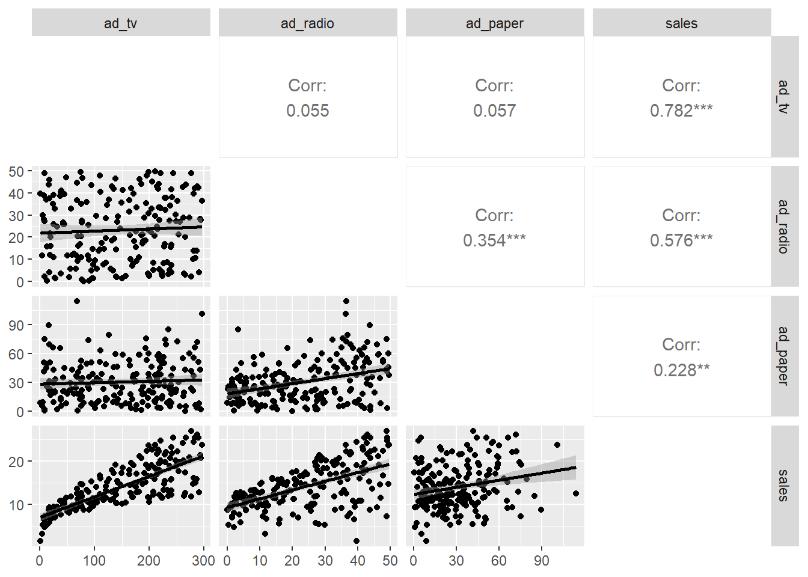
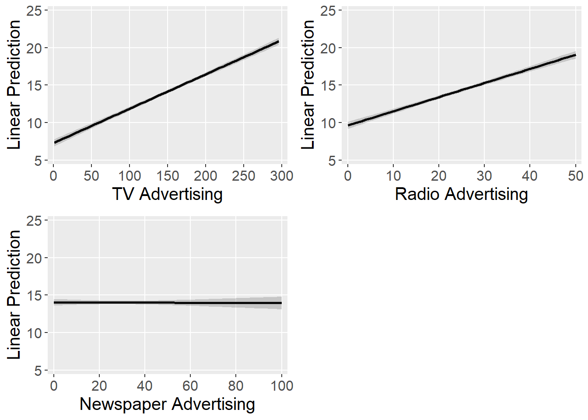

Topic 2 Linear Regression
2.1 Motivation
Regression allows marketers to:
- Understand relationships between a dependent variable and one or more independent variables
- Determine the relative strength of different independent variables
- Make predictions
2.2 R Packages and Datasets for Topic 2
library(ggplot2) # Advanced graphing capabilities
library(tidyr) # Easier programming
library(scales) # Control appearance of axes and legend labels
library(htmlTable) # Better HTML Tables
library(reshape2) # Easily convert wide data to long data
library(GGally) # ggplot extension; for scatterplot matrix
library(summarytools) # Summary statistics
library(effects) # Help with linear predictions
library(cowplot) # Arrange separate plots in a grid
library(ggtext) # Annotate ggplots
library(lubridate) # Easily work with dates
library(jtools) # Concise regression results
library(dplyr) # Easier programming
library(broom) # Extract values from model
load("Topic02/advtsales.rdata")
load("Topic02/deptstoresales.rdata")2.3 Understanding Regression Analysis
where
\(y\) is the dependent variable (DV)
\(x_k\) is the \(k\)th independent variable (IV)
\(\alpha\) is the constant or \(y\)-intercept
\(\beta_k\) is the regression coefficient for the \(k\)th IV
\(\varepsilon\) is the error term
- Objective
- Predict DV based on knowledge of the IV(s)

- Method
- OLS creates the “best” fitted line by minimizing the sum of the squared residuals
- OLS Minimizes Equation 2.1 below: \[\begin{equation} \sum_{i=1}^{n}{(y_i - \hat{y}_i)^2} \tag{2.1} \end{equation}\]
- OLS creates the “best” fitted line by minimizing the sum of the squared residuals

- Note: The “best” fitted regression line is not always the line that best represents the data
2.4 Conducting Linear Regression
2.4.1 Check Data Requirements
- Continuous DV
- Must be measured on an interval or ratio scale
- For nominal scale, use logistic regression
- For ordinal scale, use ordinal regression
2.4.2 Model Specification
- Pick IVs based on…
- Conceptual grounding
- Availability of data
- Including irrelevant IVs…
- Reduces parsimony
- May mask effects of other IVs
- Makes testing significance less precise
- Excluding relevant IVs…
- Seriously biases results
- Negatively affects interpretation
2.4.3 Model Estimation
- Estimately is typically done using OLS
- All statistical packages can conduct regression
| R | lm(dv ~ iv1 + iv2 + … + ivk) |
| Stata GUI | Statistics > Linear models and related > Linear Regression |
| Stata Command | regress dv iv1 iv2 … ivk |
| SPSS GUI | Analyze > Regression > Linear |
| SPSS Syntax | regression/dependent dv/enter iv1 iv2 … ivk |
| SAS | proc reg; model dv = iv1 iv2 … ivk; |
| Minitab | Stat > Regression > Regression |
2.4.4 Model Interpetation
Assessing Overall Model Fit
- How much variation in the DV is explained by the model
Individual Independent Attributes
- Relationship between DV and each IV
- \(H_0:\beta_k=0\) vs. \(H_a:\beta_k\ne0\)
- Interpret significant relationships
- Relative strength of IVs
2.4.5 Model Prediction
Prediction is a key use of regression
- Estimate DV based on assumed values of IVs
where
\(\hat{y}\) is predicted value of \(y\) for assumed values of \(x_k\)
and
Regression provided estimates of \(\alpha\) and \(\beta_k\)
2.5 Linear Regression Example
2.5.1 Overview
- Advertising and Sales data for 200 firms
- DV: Sales (in millions), \(sales\)
- IVs:
- TV Advertising (in 000s), \(ad\_tv\)
- Radio Advertising (in 000s), \(ad\_radio\)
- Paper Advertising (in 000s), \(ad\_paper\)
- Model: \(sales=\alpha+\beta_1ad\_tv+\beta_2ad\_radio+\beta_3ad\_paper\)
- Goal: Understand the relationship between various advertising types and sales
2.5.2 Summarize Data
2.5.2.1 Univariate Summary Statistics
| N.Valid | Mean | Std.Dev | Min | Max | |
|---|---|---|---|---|---|
| ad_paper | 200.00 | 30.55 | 21.78 | 0.30 | 114.00 |
| ad_radio | 200.00 | 23.26 | 14.85 | 0.00 | 49.60 |
| ad_tv | 200.00 | 147.04 | 85.85 | 0.70 | 296.40 |
| sales | 200.00 | 14.02 | 5.22 | 1.60 | 27.00 |
2.5.2.2 Scatterplot and Correlation Matrix
Figure 2.1: Scatterplot Matrix with Correlation

R Code
2.5.3 Results
2.5.3.1 R Output
2.5.3.1.1 Regression Results (Concise)
- Estimated regression equation: \(\hat{sales}=2.939+.046ad\_tv+.189ad\_radio-.001ad\_paper\)
| F(3,196) | 570.2707 |
| R² | 0.8972 |
| Adj. R² | 0.8956 |
| Est. | S.E. | t val. | p | |
|---|---|---|---|---|
| (Intercept) | 2.9389 | 0.3119 | 9.4223 | 0.0000 |
| ad_tv | 0.0458 | 0.0014 | 32.8086 | 0.0000 |
| ad_radio | 0.1885 | 0.0086 | 21.8935 | 0.0000 |
| ad_paper | -0.0010 | 0.0059 | -0.1767 | 0.8599 |
| Standard errors: OLS |
2.5.3.1.2 Standard Results
Table 2.3: Regression Results (Standard)
Call:
lm(formula = sales ~ ad_tv + ad_radio + ad_paper, data = advtsales)
Residuals:
Min 1Q Median 3Q Max
-8.8277 -0.8908 0.2418 1.1893 2.8292
Coefficients:
Estimate Std. Error t value Pr(>|t|)
(Intercept) 2.938889 0.311908 9.422 <2e-16 ***
ad_tv 0.045765 0.001395 32.809 <2e-16 ***
ad_radio 0.188530 0.008611 21.893 <2e-16 ***
ad_paper -0.001037 0.005871 -0.177 0.86
---
Signif. codes: 0 '***' 0.001 '**' 0.01 '*' 0.05 '.' 0.1 ' ' 1
Residual standard error: 1.686 on 196 degrees of freedom
Multiple R-squared: 0.8972, Adjusted R-squared: 0.8956
F-statistic: 570.3 on 3 and 196 DF, p-value: < 2.2e-16
2.5.3.2 Assessing Overall Model Fit
- How much variation in the DV is explained by the model
- Use \(R^2\) to assess
- Use \(\text{Adjusted }R^2\) to compare models
- Conclusion: Based on the \(R^2\), about \(90\%\) of the variance in \(sales\) is explained by the model
2.5.3.3 Individual Independent Variables
- Relationship between DV and each IV
- \(H_0:\beta_k=0\) vs. \(H_a:\beta_k\ne0\)
- Interpret significant relationships
- With a \(p\text{-value}<0.001\), \(ad\_tv\) has a significant effect on sales. A one unit increase in \(ad_tv\) is predicted to increases \(sales\) by \(.0457\) units.
- With a \(p\text{-value}<0.001\), \(ad\_radio\) has a significant effect on sales. A one unit increase in \(ad_radio\) is predicted to increases \(sales\) by \(.1885\) units.
- With a \(p\text{-value}=.860\), \(ad\_paper\) has no significant effect on \(sales\).
- Relative strength of IVs
- For relative strength, use standardized \(\beta_k\)s
- A standardized \(\beta_k\) is the effect of a single standard deviation change in the IV on the DV
- Higher absolute values are more important
- Conclusion: \(ad\_tv\) is the biggest driver of sales
| ad_tv | 0.7531 |
| ad_radio | 0.5365 |
| ad_paper | -0.0043 |
- Visualize each IV
- Sometimes it helps to visually examine the IVs for interprtation
- Plots show predicted DV at different levels of an IV, holding the other IVs constant at the mean value
Figure 2.3: Margin Plots

R Code
2.5.3.4 Model Prediction
- For simplicity, use only \(ad\_tv\) and \(ad\_radio\)
| Est. | S.E. | t val. | p | |
|---|---|---|---|---|
| (Intercept) | 2.9211 | 0.2945 | 9.9192 | 0.0000 |
| ad_tv | 0.0458 | 0.0014 | 32.9087 | 0.0000 |
| ad_radio | 0.1880 | 0.0080 | 23.3824 | 0.0000 |
| Standard errors: OLS |
- \(\hat{sales}=2.9211+.0458ad\_tv+.1880ad\_radio\)
- Predict sales for $100K television advertising and $10K radio advertising
- \(\hat{sales}=2.9211+.0458(100)+.1880(10)=9.381= \$9,381,000\)
- Visually examine prediction at different levels of \(ad\_tv\) and \(ad\_radio\)
Figure 2.1: Prediction Plots
2.6 Categorical IVs
2.6.1 Overview
- May want to represent a qualitative variable…
- Gender of a buyer
- Success/Failure
- Region of the country
- Special situations
- …But the IVs are supposed to be continuous
- Use “dummy” variables to indicate occurrence or nonoccurence of a particular attribute
- Coded as 1 (usually if true) or 0 (usually if false)
- Dummy variables can shift the intercept, the slope, or both
- Intercept Shifter
- Dummy is only its own term in the model
- \(y=\alpha+\beta_1x+\beta_2D\)
- Slope Shifter
- Dummy is only an interaction with another IV
- \(y=\alpha+\beta_1x+\beta_2(x\times D)\)
- Intercept and Slope Shifter
- Dummy is own term and an interaction with IV
- \(y=\alpha+\beta_1x+\beta_2D+\beta_3(x\times D)\)
- Intercept Shifter
2.6.2 Intercept Shifter
- \(D=\begin{cases}1\text{ if true}\\0\text{ if false}\end{cases}\)
- Model: \(y=\alpha+\beta_1x+\beta_2D\)
- When \(D=0\):
\(\begin{array}{rcl}y & = & \alpha+\beta_1x+\beta_2(0)\\& = & \alpha + \beta_1x\end{array}\) - When \(D=1\):
\(\begin{array}{rcl}y & = & \alpha+\beta_1x+\beta_2(1)\\& = & (\alpha + \beta_2)+\beta_1x\end{array}\)
- When \(D=0\):
2.6.3 Slope Shifter
- \(D=\begin{cases}1\text{ if true}\\0\text{ if false}\end{cases}\)
- Model: \(y=\alpha+\beta_1x+\beta_2(x\times D)\)
- When \(D=0\):
\(\begin{array}{rcl}y & = & \alpha+\beta_1x+\beta_2(x\times 0)\\& = & \alpha + \beta_1x\end{array}\) - When \(D=1\):
\(\begin{array}{rcl}y & = & \alpha+\beta_1x+\beta_2(x\times 1)\\& = & \alpha + (\beta_1+\beta_2)x\end{array}\)
- When \(D=0\):
- Unusual to see only a slope shift
2.6.4 Intercept and Slope Shifter
- \(D=\begin{cases}1\text{ if true}\\0\text{ if false}\end{cases}\)
- Model: \(y=\alpha+\beta_1x+\beta_2D+\beta_3(x\times D)\)
- When \(D=0\):
\(\begin{array}{rcl}y & = & \alpha+\beta_1x+\beta_2(0)+\beta_3(x\times 0)\\& = & \alpha + \beta_1x\end{array}\) - When \(D=1\):
\(\begin{array}{rcl}y & = & \alpha+\beta_1x+\beta_2(1)+\beta_3(x\times 1)\\& = & (\alpha + \beta_2) + (\beta_1 + \beta_3)x\end{array}\)
- When \(D=0\):
2.6.5 Multiple Levels
What if categorical IV has multiple levels (e.g., quarters)?
- Choose one level to be the base
- Create dummy variables for the other levels
- Levels must be mutually exclusive
- Dummy variables for four levels:
- Level 1, \(L_1=\begin{cases}1\text{ if true}\\0\text{ if false}\end{cases}\)
- Level 2, \(L_2=\begin{cases}1\text{ if true}\\0\text{ if false}\end{cases}\)
- Level 3, \(L_3=\begin{cases}1\text{ if true}\\0\text{ if false}\end{cases}\)
- Level 4, \(L_4=\text{base level; is true when }L_1=L_2=L_3=0\)
- Model: \(y=\alpha + \beta_1x + \beta_2L_1+\beta_3L_2+\beta_4L_3\)
- When Level 1:
\(\begin{array}{rcl}y & = & \alpha+\beta_1x+\beta_2(1)+\beta_3(0)+\beta_4(0)\\& = & (\alpha + \beta_2) + \beta_1x\end{array}\) - When Level 2:
\(\begin{array}{rcl}y & = & \alpha+\beta_1x+\beta_2(0)+\beta_3(1)+\beta_4(0)\\& = & (\alpha + \beta_3) + \beta_1x\end{array}\) - When Level 3:
\(\begin{array}{rcl}y & = & \alpha+\beta_1x+\beta_2(0)+\beta_3(0)+\beta_4(1)\\& = & (\alpha + \beta_4) + \beta_1x\end{array}\) - When Level 4:
\(\begin{array}{rcl}y & = & \alpha+\beta_1x+\beta_2(0)+\beta_3(0)+\beta_4(0)\\& = & \alpha + \beta_1x\end{array}\)
- When Level 1:
2.7 Categorical IVs Example
2.7.1 Overview
- Sales data for 28 department store locations across 47 weeks and 69 departments
- DV: Department Sales, \(sales\)
- IVs: Overall Store Size, \(size\)
- Week, \(week\) where 1 = \(week\) ending 11/11/11
- Predict sales by department
- Believe that the “holiday” season (or quarter 4) will be a driver of sales for some departments
- Generate dummy variable: \(q4=\begin{cases}1\text{ if }week\text{ in Quarter 4}\\0\text{ otherwise}\end{cases}\)
- Believe that the “holiday” season (or quarter 4) will be a driver of sales for some departments
2.7.2 Intercept Shift
- \(sales = \alpha + \beta_1size+\beta_2q4\)
- Results:
| F(2,1090) | 126.1302 |
| R² | 0.1879 |
| Adj. R² | 0.1864 |
| Est. | S.E. | t val. | p | |
|---|---|---|---|---|
| (Intercept) | 9993.3892 | 1890.0317 | 5.2874 | 0.0000 |
| size | 0.0546 | 0.0107 | 5.1210 | 0.0000 |
| q4 | -15153.3589 | 1012.8597 | -14.9610 | 0.0000 |
| Standard errors: OLS |
Figure 2.5: Margin Plot for Intercept Shifter
R Code
2.7.3 Slope Shift
- \(sales = \alpha + \beta_1size+\beta_2(size\times q4)\)
- Results:
| F(2,1090) | 128.2440 |
| R² | 0.1905 |
| Adj. R² | 0.1890 |
| Est. | S.E. | t val. | p | |
|---|---|---|---|---|
| (Intercept) | 6568.3795 | 1870.6049 | 3.5114 | 0.0005 |
| size | 0.0742 | 0.0107 | 6.9309 | 0.0000 |
| size:q4 | -0.0872 | 0.0058 | -15.0986 | 0.0000 |
| Standard errors: OLS |
Figure 2.6: Margin Plot for Slope Shifter

R Code
2.7.4 Intercept and Slope Shift
- \(sales = \alpha + \beta_1size+\beta_2q4+\beta_3(size\times q4)\)
- Results:
| F(3,1089) | 86.0379 |
| R² | 0.1916 |
| Adj. R² | 0.1894 |
| Est. | S.E. | t val. | p | |
|---|---|---|---|---|
| (Intercept) | 7811.3235 | 2126.7243 | 3.6729 | 0.0003 |
| size | 0.0673 | 0.0121 | 5.5712 | 0.0000 |
| q4 | -5482.4234 | 4466.5447 | -1.2274 | 0.2199 |
| size:q4 | -0.0567 | 0.0255 | -2.2229 | 0.0264 |
| Standard errors: OLS |
Figure 2.7: Margin Plot for Intercept and Slope Shifter Showing \(y\)-intercept
R Code
Figure 2.8: Margin Plot for Intercept and Slope Shifter

R Code
2.7.5 Intercept Shift with Multiple Levels
- \(sales=\alpha+\beta_1size+\beta_2q1+\beta_3q2+\beta_4q3\)
- Q4 is set as the base level
- Results:
| F(4,1088) | 307.2426 |
| R² | 0.5304 |
| Adj. R² | 0.5287 |
| Est. | S.E. | t val. | p | |
|---|---|---|---|---|
| (Intercept) | -5354.0323 | 1539.7359 | -3.4772 | 0.0005 |
| size | 0.0558 | 0.0081 | 6.8680 | 0.0000 |
| quarter1 | 7268.7033 | 904.6239 | 8.0351 | 0.0000 |
| quarter2 | 31313.5153 | 963.9526 | 32.4845 | 0.0000 |
| quarter3 | 10436.9137 | 917.0085 | 11.3815 | 0.0000 |
| Standard errors: OLS |
Figure 2.9: Margin Plot for Multiple Levels Showing \(y\)-intercept
R Code
Figure 2.10: Margin Plot for Multiple Levels
R Code
2.8 Suggested Readings
- R for Marketing Research and Analytics. 2nd Edition (2019). Chapman, Chris; McDonnel Feit, Elea
- BGSU Library Link:
http://maurice.bgsu.edu/record=b4966554~S9 - eBook through BGSU Library:
https://link-springer-com.ezproxy.bgsu.edu/book/10.1007%2F978-3-030-14316-9 - Chapter 7
- BGSU Library Link:
- OpenIntro Statistics. 4th Edition (2019). Diez, David; Cetinkaya-Rundel, Mine; Barr, Christopher D.
- Available at OpenIntro.org:
https://www.openintro.org/book/os/ - Chapter 8: Introduction to linear regression
- Chapter 9: Multiple and logistic regression
- Available at OpenIntro.org:
- Multivariate Data Analysis. Hair, Joseph F.; Black, William C.; Babin, Barry J.; Anderson, Rolph E.
- 7th Edition: Search for “multivariate data analysis 7th edition hair”
- Chapter 4: Multiple Regression Analysis
- 5th Edition: Course reserves
- Chapter 4: Multiple Regression Analysis
- 7th Edition: Search for “multivariate data analysis 7th edition hair”
2.9 R Code
2.9.1 Table 2.1
See Table 2.1
# Creates dataframe with only needed variables; Use 'dplyr::' before
# 'select' to avoid conflict with other packages
lrreg1 <- advtsales %>% dplyr::select(-id)
# Creates vector of stats to request in summarytools::descr
stats <- c("n.valid", "mean", "sd", "min", "max")
# Use package summarytools to easily create summary statistics table
# Note: summarytools::descr not available in virtual environment
# Request htmlTable for summary statistics with rounding two 2 digits
setHtmlTableTheme("Google") # Creates more compact table
htmlTable(txtRound(descr(lrreg1, stats=stats, transpose=TRUE),2))
# Note: For virtual environment, use package mosaic::favstats to produce
# separate summary statistics for each variable
htmlTable(txtRound(favstats(lrreg1$ad_paper),2), caption="ad_paper")
htmlTable(txtRound(favstats(lrreg1$ad_radio),2), caption="ad_radio")
htmlTable(txtRound(favstats(lrreg1$ad_tv),2), caption="ad_tv")
htmlTable(txtRound(favstats(lrreg1$sales),2), caption="sales")2.9.2 Table 2.2
See Table 2.2
# Run linear model and save as 'results'
results <- lm(sales ~ ad_tv + ad_radio + ad_paper, data = advtsales)
# Create 'concise' results using package 'jtools'
# NOTE: 'jtools' not available in virtual environment; use standard results
summ(results, digits=4, model.info=FALSE)2.9.3 Table 2.3
See Table 2.3
# Run linear model and save as 'results'
results <- lm(sales ~ ad_tv + ad_radio + ad_paper, data = advtsales)
# Displays results
summary(results)2.9.4 Table 2.4
See Table 2.4
# Function to calculate standardized beta coefficients
lm_beta <- function (MOD) {
b <- summary(MOD)$coef[-1, 1]
sx <- sapply(MOD$model[-1], sd)
sy <- sapply(MOD$model[1], sd)
beta <- b * sx/sy
return(beta)
}
# Create table
setHtmlTableTheme("Google", css.table="width: 50%;")
htmlTable(txtRound(as.matrix(lm_beta(results)), 4, scientific=FALSE))2.9.5 Table 2.5
See Table 2.5
# Run linear model and save as 'results'
resultssig <- lm(sales ~ ad_tv + ad_radio, data = advtsales)
# Create 'concise' results using package 'jtools'
# NOTE: 'jtools' not available in virtual environment; use standard results
summ(resultssig, digits=4, model.info=FALSE, model.fit=FALSE)2.9.6 Table 2.6
See Table 2.6
# Add Variables to 'dssales' dataframe
dssales <- dssales %>%
# Add week ending date ('weekdate') using package 'lubridate'
mutate(weekdate=ymd("2011-11-05") + (dssales$week-1)*7) %>%
# Add quarter based on 'weekdate' using package 'lubridate'
mutate(quarter = quarter(weekdate)) %>%
# Create dummy variable for quarter 4
mutate(q4=ifelse(quarter==4,1,0))
# Create new data frame with only department 16
dssales.16 <- dssales %>%
filter(dept==16)
# Run model with intercept shifter only
mod.is <- lm(sales~size + q4, data=dssales.16)
# Show results using 'jtools' package
summ(mod.is, digits=4, model.info=FALSE)2.9.7 Table 2.7
See Table 2.7
# Run model with slope shifter only; use ':' between interaction terms to
# exclude main effect of q4 from model
mod.ss <- lm(sales~size+size:q4, data=dssales.16)
# Show results using 'jtools' package
summ(mod.ss, digits=4, model.info=FALSE)2.9.8 Table 2.8
See Table 2.8
# Run model with intercept and slope shifter; use '*' between interaction
# terms to include interaction AND main effects
mod.iss <- lm(sales~size*q4, data=dssales.16)
# Show results using 'jtools' package
summ(mod.iss, digits=4, model.info=FALSE)2.9.9 Table 2.9
See Table 2.9
# Make 'quarter' a factor variable so R will use dummy variables automatically
dssales.16$quarter <- factor(dssales.16$quarter)
# Set base level of 'quarter' to be 4
dssales.16$quarter <- relevel(dssales.16$quarter, ref=4)
# Run model with multiple dummies for quarter
mod.mis <- lm(sales~size+quarter, data=dssales.16)
# Show results using 'jtools' package
summ(mod.mis, digits=4, model.info=FALSE)2.9.10 Figure 2.1
See Figure 2.1
# Use package GGally::ggpairs to easily create combination correlation
# and scatterplot matrix
ggpairs(lrreg1, # Dataset
lower=list(continuous=
wrap("smooth", method="lm", se=FALSE, # Add fit line
color="midnightblue")), # Set dot color
diag=list(continuous="blankDiag")) # Set diagonals to be blank2.9.11 Figure 2.2
See Figure 2.2
melt(lrreg1) %>% # Use package 'reshape2' to reshape the data for facet plot
# Begins plot with each variable as a factor and
# value of the variable to be plotted
ggplot(aes(factor(variable), value)) +
# Requests boxplot as geom function
geom_boxplot() +
# Adds the whiskers to the boxplot
stat_boxplot(geom='errorbar') +
# Creates a facet/matrix layout based on the variable
facet_wrap(~variable, scale="free") +
# Change text size
theme(text=element_text(size=15)) +
# Removes axis labels
labs(x="", y="")2.9.12 Figure 2.3
See Figure 2.3
# Create dataframe for ad_tv prediction using 'effects' package
lp.adtv <- as.data.frame(predictorEffects(results)$ad_tv)
# Create plot and save as object 'p1'
p1 <-
# Begins plot with 'ad_tv' on x axis and 'fit' on y axis
ggplot(aes(x=ad_tv, y=fit), data=lp.adtv) +
# Draws line based on predicted points
geom_line(color="darkred") +
# Adds confidence interaval bands around line
geom_ribbon(aes(ymin=lower, ymax=upper), fill="red", alpha=0.2) +
# Next two commands scale x and y axes
scale_x_continuous(limits=c(0,300), expand=c(.025,.025),
breaks=seq(0,300,50), minor_breaks=NULL) +
scale_y_continuous(limits=c(5,30), expand=c(.025,.025),
breaks=seq(5,30,5), minor_breaks=NULL) +
# Change text size
theme(text=element_text(size=15)) +
# Labels axes
labs(x="TV Advertising (ad_tv)", y="Linear Prediction")
# Repeat for other two variables
lp.adrad <- as.data.frame(predictorEffects(results)$ad_radio)
p2 <- ggplot(aes(x=ad_radio, y=fit), data=lp.adrad) +
geom_line(color="darkgreen") +
geom_ribbon(aes(ymin=lower, ymax=upper), fill="green", alpha=0.2) +
scale_x_continuous(limits=c(0,50), expand=c(.025,.025),
breaks=seq(0,50,10), minor_breaks=NULL) +
scale_y_continuous(limits=c(5,30), expand=c(.025,.025),
breaks=seq(5,30,5), minor_breaks=NULL) +
theme(text=element_text(size=15)) +
labs(x="Radio Advertising (ad_radio)", y="Linear Prediction")
lp.adpap <- as.data.frame(predictorEffects(results)$ad_paper)
p3 <- ggplot(aes(x=ad_paper, y=fit), data=lp.adpap) +
geom_line(color="darkorange") +
geom_ribbon(aes(ymin=lower, ymax=upper), fill="orange", alpha=0.2) +
scale_x_continuous(limits=c(0,115), expand=c(.025,.025),
breaks=seq(0,115,20), minor_breaks=NULL) +
scale_y_continuous(limits=c(5,30), expand=c(.025,.025),
breaks=seq(5,30,5), minor_breaks=NULL) +
theme(text=element_text(size=15)) +
labs(x="Newspaper Advertising (ad_paper)", y="Linear Prediction")
# Arrange three plots in a grid using package 'cowplot'
plot_grid(p1,p2,p3)2.9.13 Figure 2.4
See Figure 2.4
# Create new data for prediction with 'ad_tv' as focus
ad.tv.pred <- crossing(ad_tv=seq(0,300,30), # 11 levels
ad_radio=seq(0,50,10)) # 6 levels
# Append linear prediction and prediction intervals to new data
ad.tv.pred$pred <- as.data.frame(
predict.lm(resultssig, # Model to use for prediction
ad.tv.pred, # Data set to predict on
interval="confidence")) # Confidence intervals
# Create plot and save as object 'p1'
p1 <-
# Begins plot
ggplot(aes(x=ad_tv, # levels of 'ad_tv' for x-axis
y=pred$fit, # linear prediction for y-axis
group=as.factor(ad_radio), # different geoms for each level of 'ad_radio'
color=as.factor(ad_radio)), # different colors for each level of 'ad_radio'
data=ad.tv.pred) +
# Draws lines and points based on predicted values
geom_line() + geom_point() +
# Adds confidence interaval bands around line
geom_errorbar(aes(ymin=pred$lwr, ymax=pred$upr), width=5) +
# Next two commands scale x and y axes
scale_x_continuous(breaks=seq(0,300,50), minor_breaks=NULL) +
scale_y_continuous(limits=c(0,30), expand=c(.025,.025),
breaks=seq(0,30,5), minor_breaks=NULL) +
# Position legend at bottom with title over legend; change text size
theme(legend.position="bottom", text=element_text(size=15)) +
guides(color=guide_legend(title.position="top")) +
# Labels axes and legend
labs(x="TV Advertising (ad_tv)",
y="Linear Prediction",
color="Radio Advertising (ad_radio)")
# Repeat for other variable
ad.rad.pred <- crossing(ad_tv=seq(0,300,100), # 4 levels
ad_radio=seq(0,50,5)) # 11 levels
ad.rad.pred$pred <- as.data.frame(
predict.lm(resultssig, ad.rad.pred, interval="confidence"))
p2 <- ggplot(aes(x=ad_radio, y=pred$fit,
group=as.factor(ad_tv), color=as.factor(ad_tv)),
data=ad.rad.pred) +
geom_line() + geom_point() +
geom_errorbar(aes(ymin=pred$lwr, ymax=pred$upr), width=.83) +
scale_x_continuous(breaks=seq(0,50,10), minor_breaks=NULL) +
scale_y_continuous(limits=c(0,30), expand=c(.025,.025),
breaks=seq(0,30,5), minor_breaks=NULL) +
theme(legend.position="bottom", text=element_text(size=15)) +
guides(color=guide_legend(title.position="top")) +
labs(x="Radio Advertising (ad_radio)",
y="Linear Prediction",
color="TV Advertising (ad_tv)")
# Arrange three plots in a grid using package 'cowplot'
plot_grid(p1,p2)2.9.14 Figure 2.5
See Figure 2.5
# Create new data for prediction with 'size' as focus
size.pred <- crossing(size=seq(70000,220000,15000), # 11 levels
q4=0:1) # dummy variable
# Append linear prediction and prediction intervals to new data
size.pred$pred <- as.data.frame(
predict.lm(mod.is, # Model to use for prediction
size.pred, # Data set to predict on
interval="confidence")) # Confidence intervals
# Begins plot
ggplot(aes(x=size, # levels of 'size' for x-axis
y=pred$fit, # linear prediction for y-axis
color=as.factor(q4)), # different colors for each level of 'q4'
data=size.pred) +
# Draws lines based on predicted values
geom_line(size=1) +
# Adds confidence interval bands around line
geom_ribbon(aes(ymin=pred$lwr, ymax=pred$upr, fill=as.factor(q4)), alpha=0.2) +
# Next two commands set colors for lines and CI fill
scale_color_manual(name="Q4", values=c("darkred", "darkblue")) +
scale_fill_manual(name="Q4", values=c("red", "blue")) +
# Next two commands scale x and y axes
scale_x_continuous(breaks=seq(70000,220000,30000), minor_breaks=NULL) +
scale_y_continuous(limits=c(-5000,25000), expand=c(.025,.025),
breaks=seq(-5000,25000,10000), minor_breaks=NULL) +
# Position legend at bottom with title over legend; change text size
theme(legend.position="bottom", text=element_text(size=15)) +
# Labels axes and legend
labs(x="Size",
y="Linear Prediction")2.9.15 Figure 2.6
See Figure 2.6
# Create new data for prediction with 'size' as focus
size.pred <- crossing(size=seq(70000,220000,15000), # 11 levels
q4=0:1) # dummy variable
# Append linear prediction and prediction intervals to new data
size.pred$pred <- as.data.frame(
predict.lm(mod.ss, # Model to use for prediction
size.pred, # Data set to predict on
interval="confidence")) # Confidence intervals
# Begins plot
ggplot(aes(x=size, # levels of 'size' for x-axis
y=pred$fit, # linear prediction for y-axis
color=as.factor(q4)), # different colors for each level of 'q4'
data=size.pred) +
# Draws lines based on predicted values
geom_line(size=1) +
# Adds confidence interval bands around line
geom_ribbon(aes(ymin=pred$lwr, ymax=pred$upr, fill=as.factor(q4)), alpha=0.2) +
# Next two commands set colors for lines and CI fill
scale_color_manual(name="Q4", values=c("darkred", "darkblue")) +
scale_fill_manual(name="Q4", values=c("red", "blue")) +
# Next two commands scale x and y axes
scale_x_continuous(breaks=seq(70000,220000,15000), minor_breaks=NULL) +
scale_y_continuous(limits=c(-5000,25000), expand=c(.025,.025),
breaks=seq(-5000,25000,10000), minor_breaks=NULL) +
# Position legend at bottom with title over legend; change text size
theme(legend.position="bottom", text=element_text(size=15)) +
# Labels axes and legend
labs(x="Size",
y="Linear Prediction")2.9.16 Figure 2.7
See Figure 2.7
# Create new data for prediction with 'size' as focus
size.pred <- crossing(size=seq(0,220000,20000), # 11 levels
q4=0:1) # dummy variable
# Append linear prediction and prediction intervals to new data
size.pred$pred <- as.data.frame(
predict.lm(mod.iss, # Model to use for prediction
size.pred, # Data set to predict on
interval="confidence")) # Confidence intervals
ggplot(aes(x=size, # levels of 'size' for x-axis
y=pred$fit, # linear prediction for y-axis
color=as.factor(q4)), # different colors for each level of 'q4'
data=size.pred) +
# Draws lines based on predicted values
geom_line(size=1) +
# Next two commands set colors for lines and CI fill
scale_color_manual(name="Q4", values=c("darkred", "darkblue")) +
# Next two commands scale x and y axes
scale_x_continuous(breaks=seq(0,220000,55000), minor_breaks=NULL) +
scale_y_continuous(limits=c(-10000,25000), expand=c(.025,.025),
breaks=seq(-5000,25000,10000), minor_breaks=NULL) +
# Position legend at bottom with title over legend; change text size
theme(legend.position="bottom", text=element_text(size=15)) +
# Labels axes and legend
labs(x="Size",
y="Linear Prediction")2.9.17 Figure 2.8
See Figure 2.8
# Create new data for prediction with 'size' as focus
size.pred <- crossing(size=seq(70000,220000,15000), # 11 levels
q4=0:1) # dummy variable
# Append linear prediction and prediction intervals to new data
size.pred$pred <- as.data.frame(
predict.lm(mod.iss, # Model to use for prediction
size.pred, # Data set to predict on
interval="confidence")) # Confidence intervals
ggplot(aes(x=size, # levels of 'size' for x-axis
y=pred$fit, # linear prediction for y-axis
color=as.factor(q4)), # different colors for each level of 'q4'
data=size.pred) +
# Draws lines based on predicted values
geom_line(size=1) +
# Adds confidence interval bands around line
geom_ribbon(aes(ymin=pred$lwr, ymax=pred$upr, fill=as.factor(q4)), alpha=0.2) +
# Next two commands set colors for lines and CI fill
scale_color_manual(name="Q4", values=c("darkred", "darkblue")) +
scale_fill_manual(name="Q4", values=c("red", "blue")) +
# Next two commands scale x and y axes
scale_x_continuous(breaks=seq(70000,220000,30000), minor_breaks=NULL) +
scale_y_continuous(limits=c(-5000,25000), expand=c(.025,.025),
breaks=seq(-5000,25000,10000), minor_breaks=NULL) +
# Position legend at bottom with title over legend; change text size
theme(legend.position="bottom", text=element_text(size=15)) +
# Labels axes and legend
labs(x="Size",
y="Linear Prediction")2.9.18 Figure 2.9
See Figure 2.9
# Create new data for prediction with 'size' as focus
size.pred <- crossing(size=seq(0,240000,20000), # 13 levels
quarter=1:4) # dummy variable
# Set 'quarter' to be factor variable to match model
size.pred$quarter <- as.factor(size.pred$quarter)
# Append linear prediction and prediction intervals to new data
size.pred$pred <- as.data.frame(
predict.lm(mod.mis, # Model to use for prediction
size.pred, # Data set to predict on
interval="confidence")) # Confidence intervals
# Begins plot
ggplot(aes(x=size, # levels of 'size' for x-axis
y=pred$fit, # linear prediction for y-axis
color=quarter), # different colors for each level of 'quarter'
data=size.pred) +
# Draws lines based on predicted values
geom_line(size=1) +
# Adds confidence interval bands around line
geom_ribbon(aes(ymin=pred$lwr, ymax=pred$upr, fill=quarter), alpha=0.2) +
# Next two commands set colors for lines and CI fill
scale_color_manual(name="Quarter", values=c("darkred", "darkblue", "darkgreen", "darkorange")) +
scale_fill_manual(name="Quarter", values=c("red", "blue", "green", "orange")) +
# Next two commands scale x and y axes
scale_x_continuous(breaks=seq(0,240000,40000), minor_breaks=NULL) +
scale_y_continuous(limits=c(-10000,45000), expand=c(.025,.025),
breaks=seq(-10000,40000,10000), minor_breaks=NULL) +
# Position legend at bottom with title over legend; change text size
theme(legend.position="bottom", text=element_text(size=15)) +
# Labels axes and legend
labs(x="Size",
y="Linear Prediction")2.9.19 Figure 2.10
See Figure 2.10
# Create new data for prediction with 'size' as focus
size.pred <- crossing(size=seq(70000,220000,15000), # 11 levels
quarter=1:4) # dummy variable
# Set 'quarter' to be factor variable to match model
size.pred$quarter <- as.factor(size.pred$quarter)
# Append linear prediction and prediction intervals to new data
size.pred$pred <- as.data.frame(
predict.lm(mod.mis, # Model to use for prediction
size.pred, # Data set to predict on
interval="confidence")) # Confidence intervals
# Begins plot
ggplot(aes(x=size, # levels of 'size' for x-axis
y=pred$fit, # linear prediction for y-axis
color=quarter), # different colors for each level of 'q4'
data=size.pred) +
# Draws lines based on predicted values
geom_line(size=1) + geom_point() +
# Adds confidence interval bands around line
scale_color_manual(name="Quarter", values=c("darkred", "darkblue", "darkgreen", "darkorange")) +
# Next two commands scale x and y axes
scale_x_continuous(breaks=seq(70000,220000,30000), minor_breaks=NULL) +
scale_y_continuous(limits=c(-5000,40000), expand=c(.025,.025),
breaks=seq(-5000,40000,5000), minor_breaks=NULL) +
# Position legend at bottom with title over legend; change text size
theme(legend.position="bottom", text=element_text(size=15)) +
# Labels axes and legend
labs(x="Size",
y="Linear Prediction")